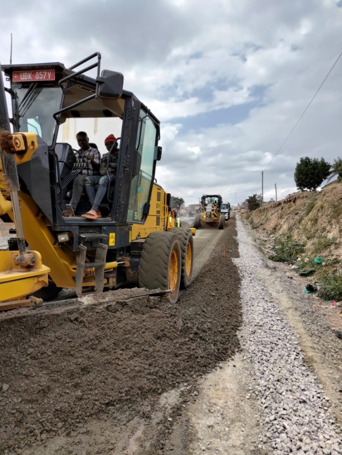
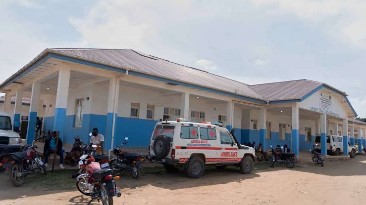
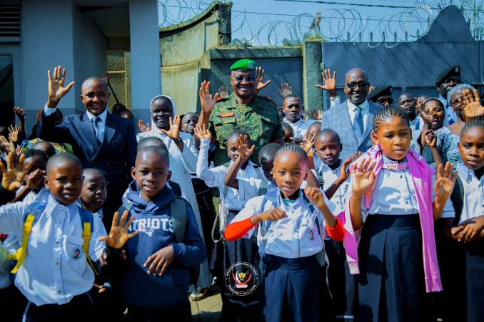
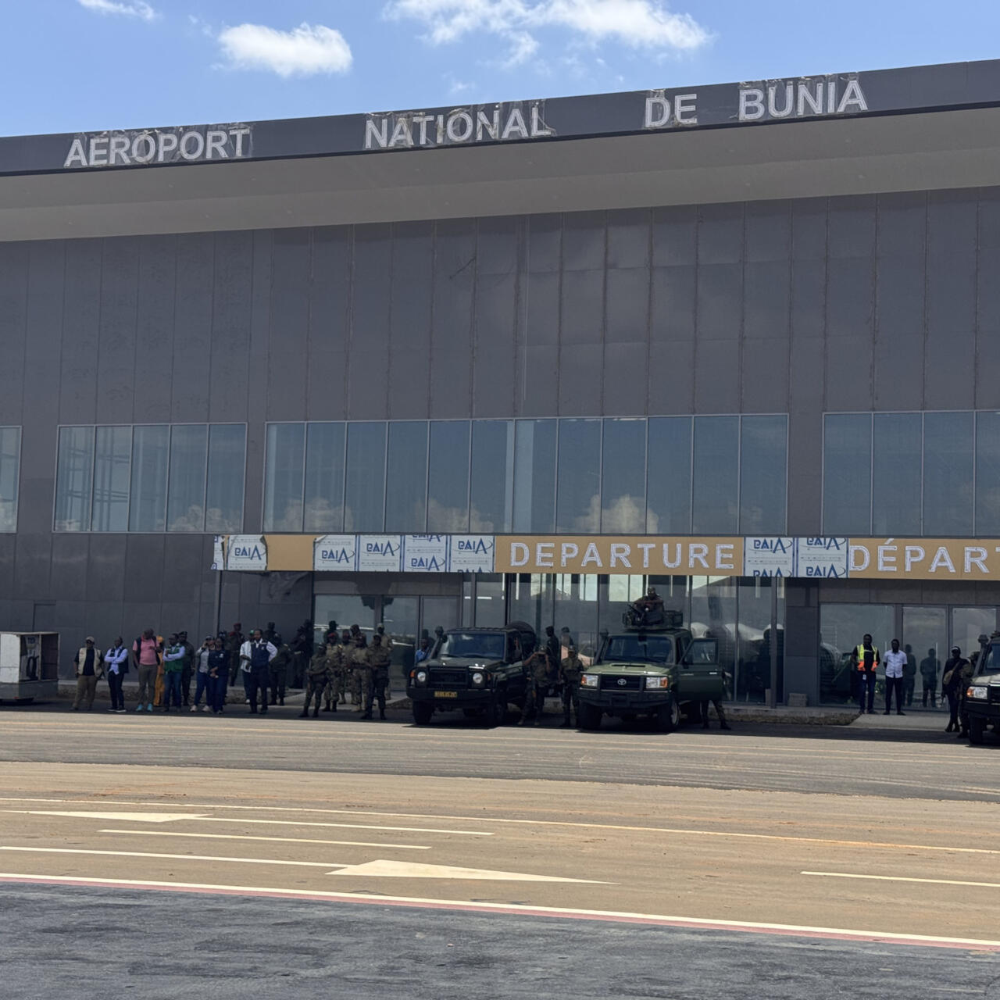
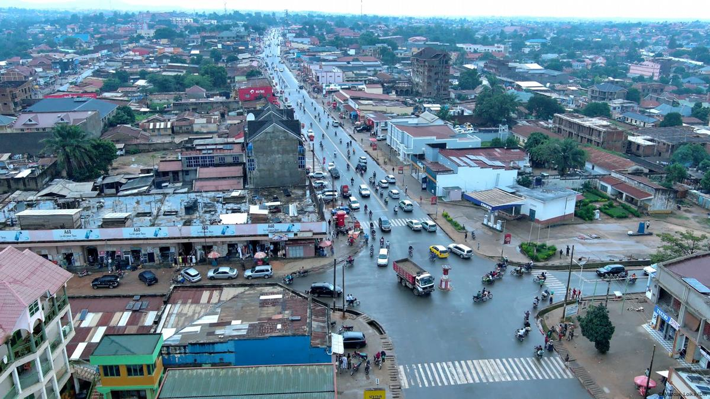

Development Projects in Ituri
Development projects play an important role in improving living conditions and supporting economic growth in Ituri. Important areas of focus include infrastructure, healthcare, education, agriculture, water and electricity.

Road Infrastructure
Improving and maintaining roads can connect communities, support transportation and make it easier for farmers and businesses to access markets and services.

Healthcare Development
Improving health facilities, medical equipment and access to healthcare services can help communities receive better medical attention.

Education
Supporting schools, classrooms, learning materials and educational opportunities helps children and young people build a better future.

Agriculture
Supporting farmers through training, improved farming methods and access to markets can strengthen food production and local livelihoods.

Transport and Connectivity
Improving transport infrastructure can strengthen connections between communities and support the movement of people and goods.

Water and Electricity
Expanding access to clean water and reliable electricity can improve public health, education, business activities and daily life.
Importance of Development Projects
Development projects can create opportunities, improve public services, support employment and strengthen the economy. Successful implementation requires planning, funding, transparency and cooperation with local communities.
Back to Home